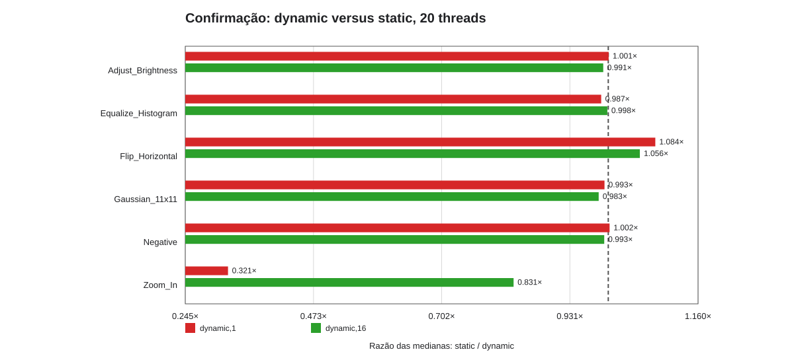
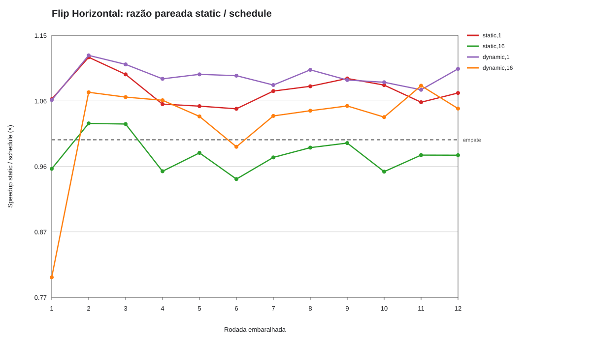
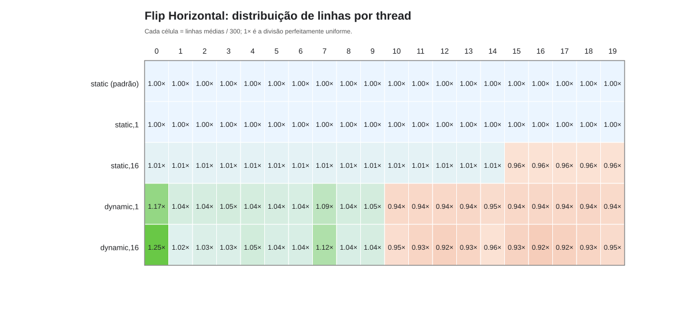
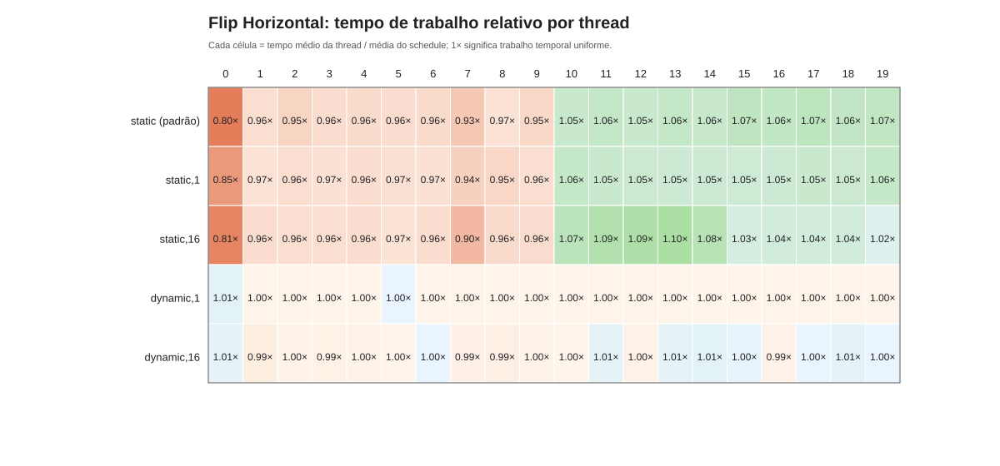

Investigação reprodutível · PCAD hypeFlip Horizontal
A carga por linha é regular; o tempo observado por thread não foi.
Dynamic melhora o Flip Horizontal de modo reprodutível?
confirmadoO que responde
O ganho ocorre naquele protocolo, mas não é uma propriedade invariável do algoritmo.
parcialO que sugere
Static atribui exatamente 300 linhas por thread em 20t, porém o tempo de trabalho varia. Dynamic redistribui linhas para equalizar duração.
abertoO que falta
Rotacionar lugares OpenMP e medir frequência por núcleo; repetir mais inicializações no mesmo host.
No job 823349, static/dynamic,1 = 1,084× em 20 threads; houve 10 repetições. No diagnóstico 823585, 12 rodadas pareadas confirmam tendência para a preparação original.
verificado
Confirmação: dynamic versus static, 20 threads

- Pergunta
- Static versus dynamic
- Métrica/eixo
- razão de tempos; sentido definido no eixo e na tabela; Razão das medianas: static / dynamic
- Configuração
- 6 operações, 36 MP, 20 threads, static/dynamic,1/dynamic,16, off-avx2/omp-avx2
- Origem
- Job(s) 823349; 10 por caso
- Permite concluir
- Confirmação de 10 amostras para várias operações.
- Ressalva
- Mediana por configuração; confira mínimo–máximo na tabela antes de afirmar diferença.
Abrir figura originalTabela de suporteGerador
verificado
Flip Horizontal: razão pareada static / schedule

- Pergunta
- Static versus dynamic
- Métrica/eixo
- tempo mediano (ms); Speedup static / schedule (×)
- Configuração
- Flip Horizontal, 36 MP, 20 threads, static/dynamic chunks
- Origem
- Job(s) 823585; 12 rodadas pareadas
- Permite concluir
- Razões por rodada, sem esconder variação.
- Ressalva
- Mediana por configuração; confira mínimo–máximo na tabela antes de afirmar diferença.
Abrir figura originalTabela de suporteGerador
verificado
Flip Horizontal: distribuição de linhas por thread

- Pergunta
- Static versus dynamic
- Métrica/eixo
- linhas atribuídas por thread; 19
- Configuração
- Flip Horizontal, 36 MP, 20 threads, static/dynamic chunks
- Origem
- Job(s) 823585; 12 rodadas pareadas
- Permite concluir
- Linhas atribuídas por thread.
- Ressalva
- Mediana por configuração; confira mínimo–máximo na tabela antes de afirmar diferença.
Abrir figura originalTabela de suporteGerador
verificado
Flip Horizontal: tempo de trabalho relativo por thread

- Pergunta
- Static versus dynamic
- Métrica/eixo
- tempo de trabalho por thread; 19
- Configuração
- Flip Horizontal, 36 MP, 20 threads, static/dynamic chunks
- Origem
- Job(s) 823585; 12 rodadas pareadas
- Permite concluir
- Tempo por thread, distinto da contagem de linhas.
- Ressalva
- Mediana por configuração; confira mínimo–máximo na tabela antes de afirmar diferença.
Abrir figura originalTabela de suporteGerador
Documentos e código: Análise das 9 perguntas
Qual o papel do primeiro toque e da topologia?
confirmadoO que responde
A inicialização das páginas participa causalmente do contraste em 20 threads.
parcialO que sugere
Em 10 threads no mesmo nó NUMA, dynamic ainda ganha; NUMA remoto não é a única explicação.
abertoO que falta
Medir afinidade e frequências por núcleo em réplicas adicionais.
Nos jobs independentes 824168/824169, init serial: 6,78/6,22 ms (static/dynamic,1); init paralelo-static: 4,20/4,53 ms. O sinal inverte.
corrigido
Flip, 20 threads: o primeiro toque inverte o resultado

- Pergunta
- Static versus dynamic
- Métrica/eixo
- razão de medianas static/dynamic,1; >1 favorece dynamic; Speedup static / dynamic,1
- Configuração
- 20 threads, init serial/paralelo-static, static/dynamic,1
- Origem
- Job(s) 824168, 824169; 2 jobs, 1 caso por job
- Permite concluir
- Figura corrigida: agora mostra duas razões finitas, uma em cada lado de 1×.
- Ressalva
- Dois jobs são réplicas de alocação, não dez repetições por caso; efeito depende da inicialização.
Abrir figura originalTabela de suporteGerador
corrigido
Flip: dispersão do tempo de trabalho entre threads

- Pergunta
- Static versus dynamic
- Métrica/eixo
- coeficiente de variação do tempo por thread (%); CV do tempo de trabalho por thread (%)
- Configuração
- init serial/paralelo-static, static/dynamic,1
- Origem
- Job(s) 824168, 824169; 2 jobs, 1 caso por job
- Permite concluir
- Figura corrigida: CV de tempo por thread; não mede velocidade do kernel.
- Ressalva
- Mediana por configuração; confira mínimo–máximo na tabela antes de afirmar diferença.
Abrir figura originalTabela de suporteGerador
Documentos e código: Análise complementar
Código: uma linha por iteração, tempo por thread
Fonte: image_manipulation.cpp:1024–1046. O código mostra o trabalho distribuído; a confirmação de vetorização vem do relatório GCC, não do pragma sozinho.
1024 void flip_horizontal(ImageState& img) {
1025 #pragma omp parallel for schedule(runtime)
1026 for (int j = 0; j < img.height; j++) {
1027 flip_horizontal_row(img, j);
1028 }
1029 }
1030
1031 double flip_horizontal_profiled(ImageState& img, std::vector<ThreadWorkInfo>& per_thread) {
1032 per_thread.assign(static_cast<size_t>(omp_get_max_threads()), {});
1033 const auto total_start = std::chrono::steady_clock::now();
1034 #pragma omp parallel
1035 {
1036 const int thread = omp_get_thread_num();
1037 int rows = 0;
1038 const double work_start = omp_get_wtime();
1039 #pragma omp for schedule(runtime) nowait
1040 for (int j = 0; j < img.height; ++j) {
1041 flip_horizontal_row(img, j);
1042 ++rows;
1043 }
1044 const double work_end = omp_get_wtime();
1045 per_thread[static_cast<size_t>(thread)] = {thread, rows, (work_end - work_start) * 1000.0};
1046 #pragma omp barrier
{kind=link}
{kind=link}
{kind=link}
{kind=link}